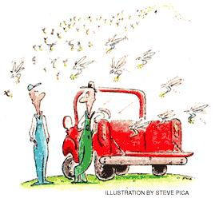

Old gags find new life. . . unfortunately.
As I watched a dust cloud chasing a raggedy pickup from a long way down the road, I felt an internal response. Clutch. That's his name. That's also what my belly does every time he shows up.
Clutch is one of those guys who insists on telling you a joke before he even says hi. And if, heaven forbid, you have one to tell him, you'll find yourself playing king of the mountain with a humor bully. I hate being cast in the role of jokee to a self-appointed joker.
Anyhow, a person's got to be neighborly, so I slouched on down to Clutch's truck as he crunched to a stop in front of my barn.
"Hey, Clutch," I called out, bracing myself for his opening salvo.
Instead, he just eased himself out of the pickup, propped his elbows on the hood of his truck and sighed deeply. No joke. No chatter. He was in a strange mood.
"Alva, can I just set behind your barn for a spell?" Clutch asked, staring at my corral as though he had never seen our mare, Pachooky, before.
We all know that every man needs the backside of a barn from time to time. Where else can you go for a quiet sit where weeds grow through old hay rakes and tangle with foggy memories of your first kiss, your first smoke? You can't refuse such a heartrending plea from your fellow man. But why couldn't he just use his own barn?
"You know, since we sold the 80 acres behind our barn to the shopping mall," Clutch answered my unspoken question, "I've lost my sanctuary. Now everyone who runs in to pick up a pair of pantyhose can look right into my personal space. I feel exposed. On top of that, my wife wants me to clear out all the good junk back there and plant flowers. I got no space left."
"Well, you just make yourself at home," I offered.
"Thanks, Alva," Clutch muttered, "but I have another favor to ask."
"What's that?"
"Can I dump my computer back there?"
"Sure," I replied. "What's one more piece of junk? Didn't you just buy it a while back?"
"It's making me depressed," Clutch replied.
"How's that?",
"It's those darn e-mail jokes," Clutch explained as we each grabbed a hunk of hardware and headed for my sanctuary. "Everyone who can forward a canned piece of humor thinks he's a comedian: 'Hey, look at me. I never can remember a joke but now I can be funny, too.' Amateurs!"
"Some folks have no sense of proportion when it comes to humor," I offered.
"Couldn't agree with you more," Clutch remarked. "But worse than that, they're burning up material at a ferocious rate. Some of my favorite stories are being passed along from mailing list to mailing list. Why just the other day, after muttering the rhetorical, 'stop me if you heard this,' some guy took me at my word. 'Hey,' he said, 'I just read that one on my e mail.' Read it? You don't read jokes."
I nodded as I plunked the keyboard next to the hard drive, monitor and mouse on the bed of an old manure spreader and waited for the rest of the tirade.
"You tell jokes." Clutch continued. "That's why they call us storytellers."
"You must get a ton of re quests for autographs." I needled.
"No. We humorists don't have much by way of fan clubs. Sometimes it's kind of lonely at the top of the comedy heap. But we're all convinced that people are lin ing up waiting to hear our latest."
"Hmmm."
Clutch stared up at the sky for a moment and swallowed loudly. Why, I almost kicked the slats out of my cradle the first time I heard some of those jokes that folks are slinging around in cyberspace. They're taking liberties with some classics."
"Darned left-brain obsessive's!" I empathized. "Why, I bet you feel like a 15th-century monk seeing a printing press for the first time - there goes the neighborhood."
"See? You get it. That's why I love you," Clutch sighed, stopping himself just short of reaching over and hugging me. "You know just how I feel. Which, by the way, is a lot better now, thanks to the use of your quiet space."
"Think nothing of it," I replied as we walked back to the truck. As if to prove he was back to his old self, Clutch rolled down his window for a parting shot. "Did you hear about the cowboy with chapped lips who kissed his horse under the tail each morning...?"
"Yup," I muttered.
"...said it kept him from licking his lips." I watched Clutch's head bob up and down with self-inflicted laughter as he barreled out of my drive.
Well, two can play at this game, I thought to myself. All I have to do is hook up that computer setting behind my barn and send Clutch an e-joke about the cowboy with chapped lips.
Read more of Joe Novara's quiet adventures in his new book, From My Side of theFence, available at www.syncopatedpress.com.
|
 |
|
|